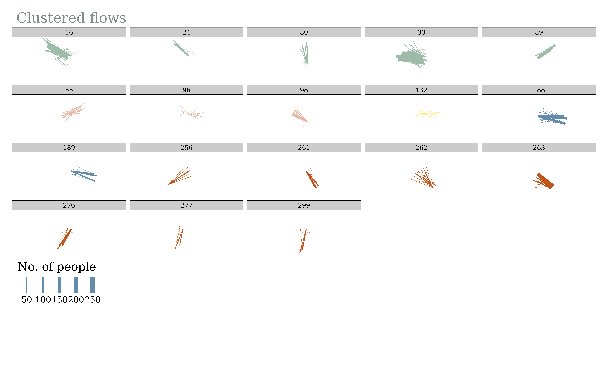

The goal of flowcluster is to provide minimal functionality for clustering origin-destination (OD) pairs, representing desire lines (or flows). This includes:
- Creating distance matrices between OD pairs
- Passing distance matrices to a clustering algorithm
Installation
You can install the released version of flowcluster from CRAN with:
install.packages("flowcluster")And the development version from GitHub with:
# install.packages("devtools")
devtools::install_github("Hussein-Mahfouz/flowcluster")Load it as follows:
Usage
The package provides a function to create a distance matrix from a data frame of OD pairs, and then pass that matrix to a clustering algorithm. The current distance matrix is an implementation of the flow distance and flow dissimilarity measures described in (Tao and Thill 2016).
Data preparation
First, load the flowcluster package and the sample data, and project it to a projected coordinate reference system (CRS).
This is important for accurate length calculations and spatial operations.
library(tidyverse)
library(sf)
library(tmap)
# Load sample flow data and project to metric CRS (e.g., EPSG:27700)
flows_sf <- flows_leeds
flows_sf <- st_transform(flows_sf, "EPSG:27700")Next, add a column containing the length (in meters) of each flow line.
This step also checks that your data is in a projected CRS.
# Add length (meters) to each flow line
flows_sf <- add_flow_length(flows_sf)
head(flows_sf, 5)Simple feature collection with 5 features and 4 fields
Geometry type: LINESTRING
Dimension: XY
Bounding box: xmin: 419427.1 ymin: 443211.1 xmax: 443015 ymax: 448448
Projected CRS: OSGB36 / British National Grid
# A tibble: 5 × 5
origin destination count geometry length_m
<chr> <chr> <dbl> <LINESTRING [m]> <dbl>
1 E02002330 E02002330 30 (439593.3 448448, 439593.3 448448) 0
2 E02002330 E02002331 366 (439593.3 448448, 443015 447640.9) 3516.
3 E02002330 E02002332 6 (439593.3 448448, 419427.1 446200.1) 20291.
4 E02002330 E02002333 2 (439593.3 448448, 420574.6 444971.5) 19334.
5 E02002330 E02002334 31 (439593.3 448448, 442341.2 443211.1) 5914.Filter out flows based on a minimum and maximum length. In the code below, we filter flows to keep only those between 1 and 20 kilometers.
# Filter flows based on length (e.g., between 100 and 10000 meters)
flows_sf <- filter_by_length(flows_sf, length_min = 1000, length_max = 20000)Then, extract start and end coordinates for each flow, and assign unique IDs.
These are needed for subsequent distance calculations and clustering.
Simple feature collection with 5 features and 9 fields
Geometry type: LINESTRING
Dimension: XY
Bounding box: xmin: 420574.6 ymin: 443211.1 xmax: 443015 ymax: 448448
Projected CRS: OSGB36 / British National Grid
# A tibble: 5 × 10
origin destination count geometry length_m x y
<chr> <chr> <dbl> <LINESTRING [m]> <dbl> <dbl> <dbl>
1 E02002330 E02002331 366 (439593.3 448448, 443015 4… 3516. 4.40e5 4.48e5
2 E02002330 E02002333 2 (439593.3 448448, 420574.6… 19334. 4.40e5 4.48e5
3 E02002330 E02002334 31 (439593.3 448448, 442341.2… 5914. 4.40e5 4.48e5
4 E02002330 E02002335 17 (439593.3 448448, 434926.1… 6385. 4.40e5 4.48e5
5 E02002330 E02002336 5 (439593.3 448448, 424754.2… 15687. 4.40e5 4.48e5
# ℹ 3 more variables: u <dbl>, v <dbl>, flow_ID <chr>Distance Matrix calculation
Calculate a pairwise distance measure between all flows using their coordinates.
You can adjust alpha and beta to change the relative importance of start and end locations in the clustering process.
# Compute pairwise flow distances (fd and fds columns)
flows <- st_drop_geometry(flows_sf)
distances <- flow_distance(flows, alpha = 1, beta = 1)Convert the long-format distance table to a matrix, which is required for clustering.
# Create a distance matrix from the long-form distance data. Choose the column for distances you want to use.
# The 'fds' column is the flow dissimilarity measure, and the 'fd' column is the flow distance measure.
dmat <- distance_matrix(distances, distance_col = "fds")
# check 1st couple of rows columns of the distance matrix
head(dmat[1:2, 1:2])Clustering
Prepare a weight vector, typically based on a “count” column (number of trips, etc).
If your data does not have a “count” column, you can add one with flows$count <- 1. Weights are very handy, otherwise our matrix would be huge, as we would have to replicate each OD pair n times depending on the number of observations between them. Unfortunately, there is no out-of-the-box support for adding weights in other clustering algorithms such as hdbscan or optics, so we will use {dbscan} for now, which does support weights.
# Prepare weights for each flow (here we use the count column)
wvec <- weight_vector(dmat, flows, weight_col = "count")Finally, cluster the flows using DBSCAN.
Adjust eps and minPts to control cluster tightness and minimum cluster size. Cluster composition is determined by these DBSCAN parameters.
# Cluster flows using DBSCAN
flows_clustered <- cluster_flows_dbscan(dmat, wvec, flows, eps = 8, minPts = 70)
# View the first few rows of the clustered data
head(flows_clustered, 10)# A tibble: 10 × 10
origin destination count length_m x y u v flow_ID cluster
<chr> <chr> <dbl> <dbl> <dbl> <dbl> <dbl> <dbl> <chr> <int>
1 E0200… E02002331 366 3516. 4.40e5 4.48e5 4.43e5 4.48e5 E02002… 1
2 E0200… E02002333 2 19334. 4.40e5 4.48e5 4.21e5 4.45e5 E02002… 0
3 E0200… E02002334 31 5914. 4.40e5 4.48e5 4.42e5 4.43e5 E02002… 0
4 E0200… E02002335 17 6385. 4.40e5 4.48e5 4.35e5 4.44e5 E02002… 0
5 E0200… E02002336 5 15687. 4.40e5 4.48e5 4.25e5 4.43e5 E02002… 0
6 E0200… E02002341 9 12306. 4.40e5 4.48e5 4.29e5 4.42e5 E02002… 0
7 E0200… E02002344 7 11883. 4.40e5 4.48e5 4.31e5 4.40e5 E02002… 0
8 E0200… E02002345 1 14937. 4.40e5 4.48e5 4.27e5 4.40e5 E02002… 0
9 E0200… E02002346 2 16966. 4.40e5 4.48e5 4.25e5 4.39e5 E02002… 0
10 E0200… E02002347 3 13534. 4.40e5 4.48e5 4.30e5 4.39e5 E02002… 0
# number of flows in each cluster
flows_clustered |>
group_by(cluster) |>
summarise(n = n()) |>
arrange(desc(n))Visualise
Let’s take a look at the clusters
# Keep only the biggest clusters for visualisation
flows_clustered <- flows_clustered |>
filter(cluster != 0) |> # these are normally the noisepoints
group_by(cluster) |>
mutate(
size = n(),
count_cluster = sum(count)
) |>
ungroup() |>
filter(
size > 7, # minimum size of cluster
count_cluster > 100
) # minumum number of trips in clusterAdd geometry back onto the data
# Add the geometry back onto the data
flows_clustered <- flows_sf |>
select(flow_ID) |>
inner_join(flows_clustered, by = "flow_ID")
# plot
tm_shape(flows_clustered) +
tm_lines(
lwd = "count",
col = "cluster",
palette = "Accent", # YlGn
# style = "pretty",
alpha = 1,
title.col = "Cluster",
title.lwd = "No. of people",
scale = 10,
legend.col.show = FALSE,
showNA = FALSE
) +
tm_facets(
by = "cluster",
free.coords = FALSE,
nrow = 4,
showNA = FALSE
) +
tm_layout(
fontfamily = "Georgia",
main.title = paste0("Clustered flows"),
main.title.size = 1.1,
main.title.color = "azure4",
main.title.position = "left",
legend.outside = TRUE,
legend.outside.position = "bottom",
legend.stack = "horizontal",
# remove panel headers
# panel.show = FALSE,
frame = FALSE
) -> cluster_results
cluster_results
The package also has a function to test different combinations of input parameters (eps and minPts) to see how the clustering changes. This can be useful for preliminary sensitivity analysis.
sensitivity_results <- dbscan_sensitivity(
flows = flows,
dist_mat = dmat,
options_epsilon <- c(1, 2, 5, 7.5, 9),
options_minpts <- c(50, 75, 100, 150)
)
# show the results
head(sensitivity_results)# A tibble: 6 × 4
id cluster size count_sum
<chr> <int> <int> <dbl>
1 eps_1_minpts_50 0 9274 80815
2 eps_1_minpts_50 1 1 366
3 eps_1_minpts_50 2 1 71
4 eps_1_minpts_50 3 1 61
5 eps_1_minpts_50 4 1 82
6 eps_1_minpts_50 5 1 342
# number of clusters with more than five od pairs:
sensitivity_results %>%
filter(size > 5) %>%
group_by(id) %>%
summarise(
no_of_clusters = n(),
total_count = sum(count_sum)
) %>%
ungroup() %>%
arrange(desc(no_of_clusters))# A tibble: 20 × 3
id no_of_clusters total_count
<chr> <int> <dbl>
1 eps_7.5_minpts_50 47 82404
2 eps_9_minpts_75 47 98085
3 eps_9_minpts_50 46 85491
4 eps_9_minpts_100 28 105479
5 eps_7.5_minpts_75 26 94718
6 eps_7.5_minpts_100 22 102502
7 eps_9_minpts_150 18 113117
8 eps_7.5_minpts_150 14 110810
9 eps_5_minpts_50 6 80175
10 eps_5_minpts_75 4 93612
11 eps_5_minpts_100 3 102246
12 eps_1_minpts_100 1 102797
13 eps_1_minpts_150 1 111862
14 eps_1_minpts_50 1 80815
15 eps_1_minpts_75 1 94111
16 eps_2_minpts_100 1 102797
17 eps_2_minpts_150 1 111862
18 eps_2_minpts_50 1 80815
19 eps_2_minpts_75 1 94111
20 eps_5_minpts_150 1 111443Let’s plot the output
sensitivity_results %>%
filter(cluster != 0) %>%
group_by(id) %>%
mutate(clusters = n()) %>%
# How many clusters have more than 5 od pairs in them?
mutate(clusters = sum(size > 5)) %>%
ungroup() %>%
filter(clusters > 5) %>%
ggplot(aes(x = cluster, y = size, fill = count_sum)) +
geom_col() +
scale_y_continuous(trans = "log10") +
facet_wrap(~id, scales = "fixed") +
labs(
title = "Sensitivity analysis for clustering - Varying {eps} and {minPts}",
subtitle = "Parameter combinations that returned more than 1 cluster",
x = "Cluster no.",
y = "No. of od pairs in cluster",
fill = "No. of \ncommuters"
) +
theme_bw()The plot shows the number of origin-destination pairs in each cluster. For each facet, each bar represents a cluster, and the height of the bar indicates the number of origin-destination pairs in that cluster. Many of the parameter (minPts and eps) combinations returned no clusters, and the combinations that did return clusters are shown in the plot. Depending on the analysis being done, you could proceed with the promising combinations, visualise them as done in the map above, and choose the one that makes the most sense to you.